Thrill Hill BUILT ON DEV · HELD FOR v1.1
Agility's own map, the way the Guild is Thieving's own building: a monster-truck stunt park through a gate where the Yard's ladder to The Run used to be. The courses are pens walled with crash barriers, and the only way from one pen to the next is the stunt in the barrier between them, so running the stunts in order is the lap. Two maps: Thrill Hill (the Rookie and Pro Runs, the Junk Mound, Fast Eddie) and, by human cannonball, Daredevil Peak (the Champion Run, the Burnout Pit, and Big Daddy Crusher on the Peak). It retires The Run.

node tools/eastscape-thrill-test.mjs: the real server, every stunt, lap, gate, slip, cannon and the BookieThe two maps
Rendered from the real maps (node tools/thrill/render-map.mjs), with every stunt numbered in its course's colour:
Rookie, Pro, Champion, and the
gates (50, 90) and the cannon and zip line (▲). The ground is the Yard's own sheet recoloured to packed red
dirt, the tracks are the game's cobble road, and the junk in the pens is placed so it can never pinch a passage shut
(lt-wild/thrill-gen.py checks every pen can only be entered through its stunt, and that each course runs pen to pen in order).
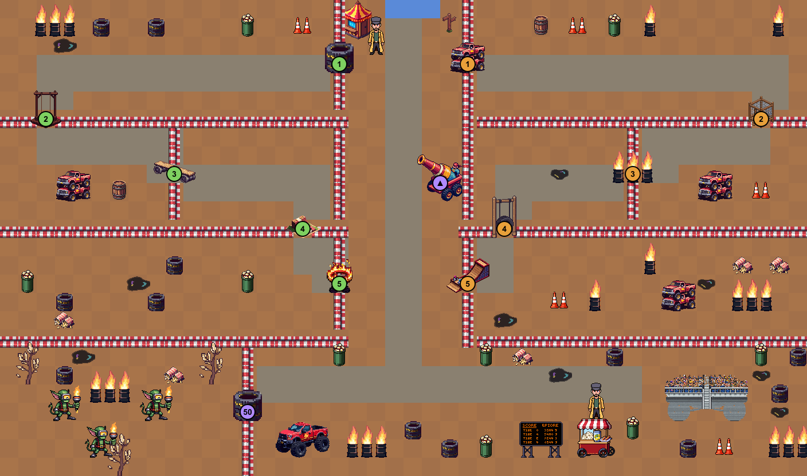
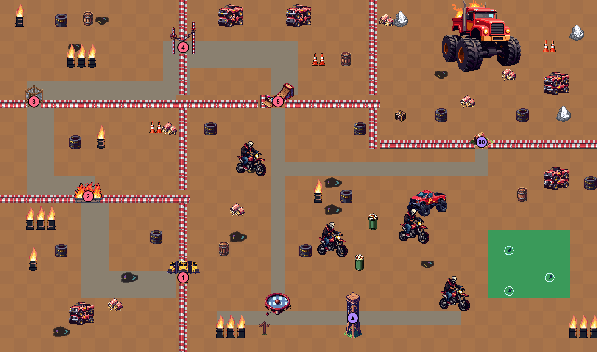
The courses
Each stunt is a click: the server checks your Agility, walks you to the near side, and plays you across (2.2 seconds, the shortcut code's crossing). XP for every stunt crossed forwards; the lap bonus when the last one closes a lap run in order from the first, and a roll for a runner's mark. Going back over a stunt is free and pays nothing. A lap left alone for ten minutes starts again.
| Course | Agility | The stunts, in order | Each | Lap bonus | A lap | Mark |
|---|---|---|---|---|---|---|
| The Rookie Run | 1 | tyre wall · rope swing · balance plank · dirt-bike ramp · flaming hoop | 25 | 60 | 185 XP | 1 lap in 3 |
| The Pro Run | 40 | crushed-car pile · cargo net · burning barrels · tyre swing · half-pipe | 70 | 120 | 470 XP | 1 lap in 2 |
| The Champion Run | 70 | jump the buses · through the fire · cargo net · high wire · half-pipe drop | 130 | 250 | 900 XP | 9 laps in 10 |
Slips: the shortcut rule, 10% at exactly the level falling to nothing ten levels over it, and never on the Rookie Run. The Sure-foot tonic stops slips for ten minutes. The Junk Mound's gate, the Peak's ramp, the cannon and the zip line pay their level × 3 like a shortcut.
Only by Agility
Fast Eddie, the Bookie
At the start line. He takes runner's marks and nothing else; marks still sell to Bom for 50 tickets, so nothing here mints tickets.
| Goods | Marks | What it does |
|---|---|---|
| Sure-foot tonic | 8 | a drink: ten minutes of no slips on stunts or shortcuts, and 10% more Agility XP |
| Stunt helmet | 100 | a helm (Agility 40): walk 2% faster |
| Stunt leathers | 150 | a body (Agility 60): walk 2% faster |
Every walk-speed piece here (boots 4, helmet 2, leathers 2, the fillet 8, the pet 10) goes through the game's existing speed cap (full to 20%, half above, 50% at most), so stacking them cannot break movement.
The front door, and the crowd
The way in is no longer a gate in the grass. Once Thrill Hill opens, The Run's door moves to the south end of the court (the owner: "make the ticket booth entrance in the further south area of the court"): a patch of packed dirt against the market railing, the arch, a ticket counter with Dizzy Dale behind it ("Let me in" works the same as clicking the arch), and a monster truck parked on two crushed cars beside it. Thrill Hill's exit brings you back out in front of the arch. These pieces load as one 10 KB sheet only once the door is there, never in the Yard's first load.
On the hill: Corndog Carl and his snack cart by the scoreboard sell popcorn (150 tickets, heals 18), pink lemonade (250, a drink: 3% quicker for ten minutes) and corn dogs (300, heals 30), singly or by five; they sell back for a third, so the cart is a small ticket sink. Bins and popcorn litter are scattered about, Fast Eddie has a betting window behind him, and stunt-park regulars wander the arena and chat (RampRat, SendItSteve and NitroNan on the hill; WheelieWendy and CannonCarl on the Peak), started outside the pens so they can't strand themselves.
The art
All PixelLab, in the game's style brief. The monsters' walk and attack frames are made from each picture
(tools/eastscape-thrill-art.mjs: a squash-and-stretch bob and a lean into the swing). 94 KB for both maps.
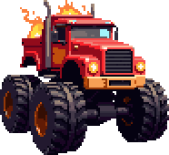
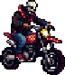
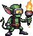
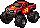
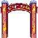
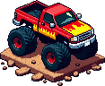
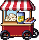
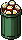
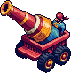
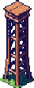
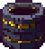
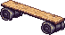
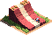
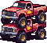
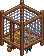
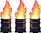
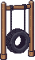
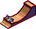
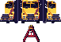
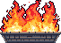
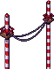
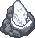
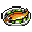
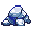
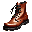
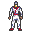
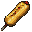
Balance
Try it on dev
- The game server:
wrangler dev --port 8787 --var DEV:1 --define globalThis.__ES_OPEN_ALL:true, and the page athttp://localhost:4321/eastscape.html?open=1&as=<name>. - The gate is where The Run's ladder was, by the Yard's north wall (10, 2). An admin can also
tp thrillortp thrill_top. - To try everything at once, give the test character Agility 90 from the admin window's Testing tab.
Shipping it (v1.1)
- Switch:
HOLD.thrillto false in the rules file. Until then The Run's ladder, quest and map are exactly as they were; anyone somehow saved on either map is walked back to the Yard (the worker's HELD_MAPS). - Files: the rules, the maps (
eastscape-closed.js), the wiki, the page; 69 new pictures and 9 item icons, and the rebuilt sprite sheets (push and probe these first); the worker's newthrill.js. - It retires The Run: the Yard's door goes to Thrill Hill, and Beat the Clock sends you there. The Run's map stays in the rules so nothing saved inside it breaks.
- Not in this build: a best-lap board (laps and best times are already saved per character,
C.lapsandC.bestLap), a weekly race, and Getaway silks (they belong to the skilling sets).
The first design for this map, Daredevil Gorge, is in the Archive.